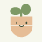

mầm.Đang thức dậy…CHĂM MÌNH, NUÔI MẦM
Mỗi chút tốt lành,
một chiếc lá xanh.
Nhẹ nhàng thôi, đều đặn là được.
🌼
ᴗ
Mầm mới0 điều tốt
Từng lần chăm mình đều giúp cây lớn lên.
Nhịp nhỏ mỗi ngày
Uống nước nào
Một ly mát lành cho bạn
Đang tải…
Đứng dậy vươn vai
Để cơ thể thở một chút
Đang tải…
Những điều tốt hôm nay ✦
0 / 2.000 ml▥ Nhìn lại tuần của bạn⌄
0 ml0 lần vận động
7 ngày gần nhất · Chọn một ngày để xem chi tiết
Cột nét đứt: chưa có dữ liệu. Cây không mất điểm khi bạn nghỉ.
☾ Một khoảng tập trung
Tạm dừng lời nhắc, dành trọn tâm trí cho việc bạn làm.
⚙ Nhịp nhắc của bạn⌄
✿ Cá nhân hóa Mầm⌄
Tắt để chỉ nhận thông báo hệ thống. Tự lưu khi đổi.